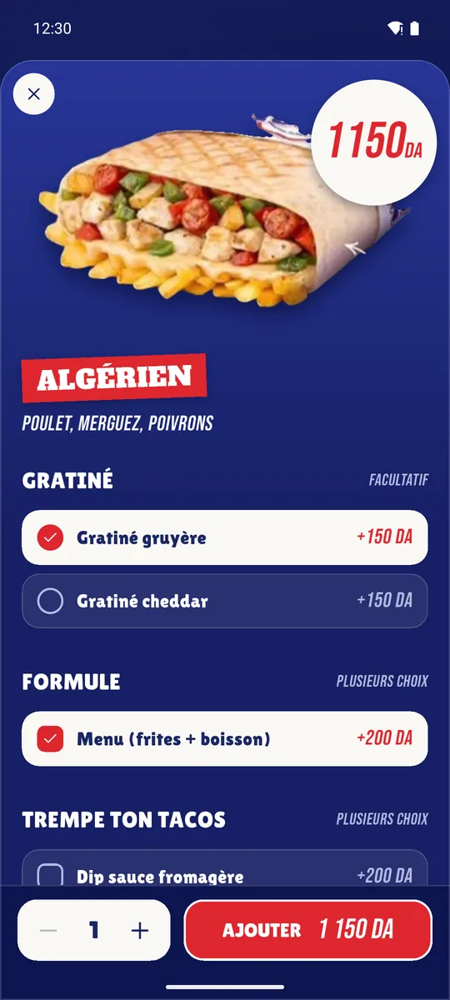
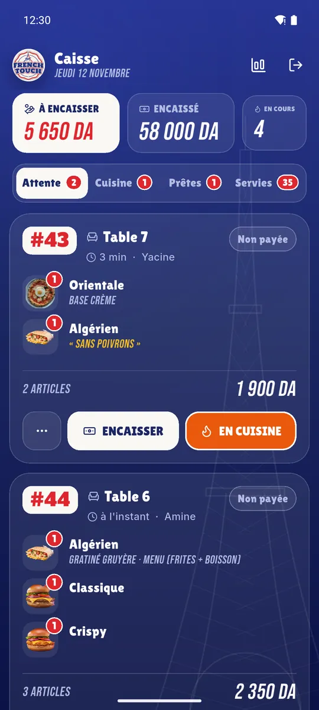
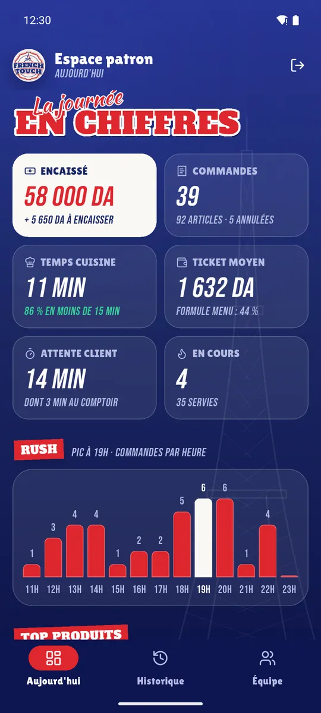

Serveur
Built from the restaurant’s own menu boards
Navy board, Eiffel line art, slab and script lettering, red tags. Product photos are cut out of the real boards with rembg and OpenCV; the app draws the price sticker itself so prices stay right when the menu changes.

Options
One tap to add, a sheet when it matters
Menu formula (+200 DA), gratiné, cheese dip, pizza base, required choices and a free note. Pricing and validation live in a plain immutable ItemConfiguration, unit-tested away from the widgets.

Caisse
One realtime stream, every device in sync
Orders move waiting → cooking → ready → served. Ticket numbers come from a Postgres trigger with an advisory lock, so two waiters sending in the same second never get the same number.

Espace patron
The database stamps every step
Which gives kitchen time, counter time and total wait per order, waiter and day. Stats are pure functions over the order list, so the owner’s screens are tested without a network.